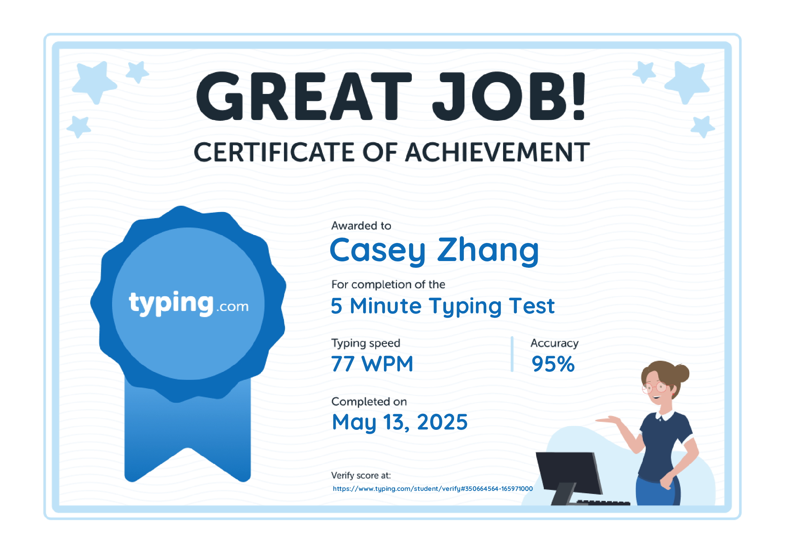
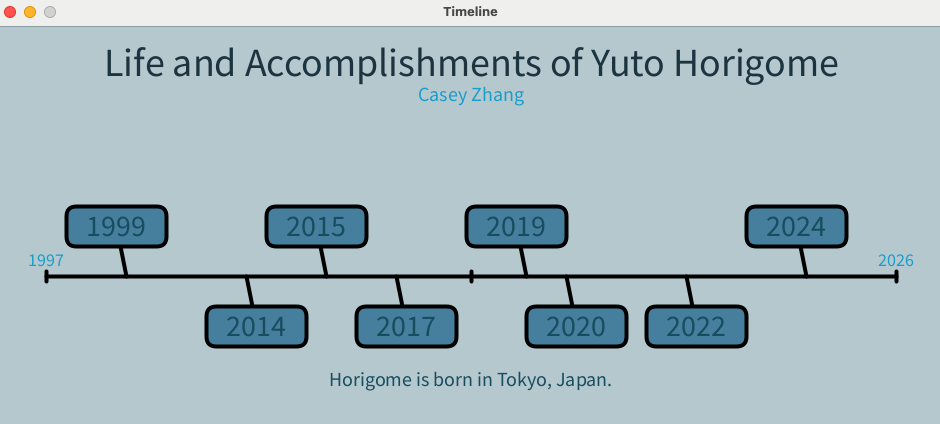
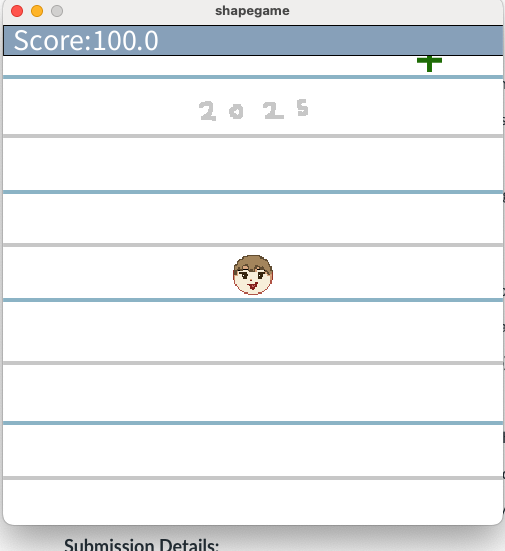
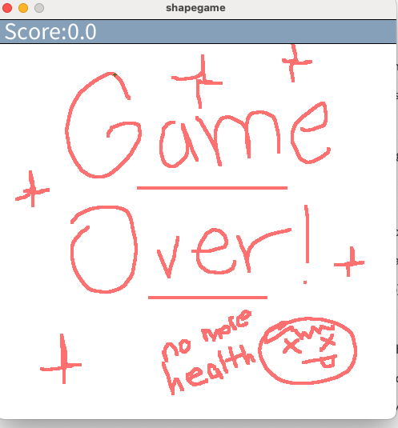
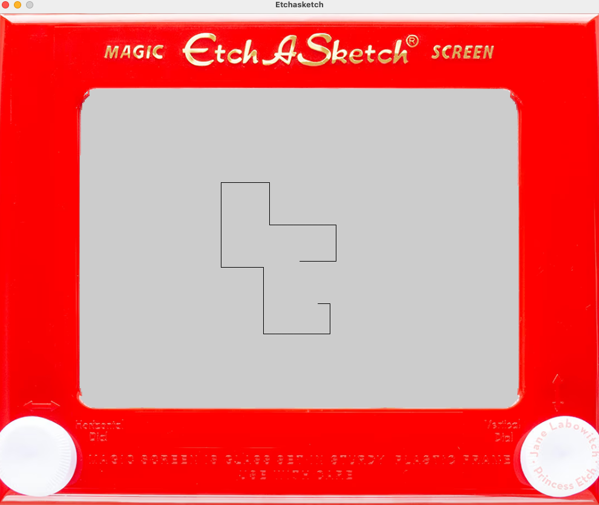
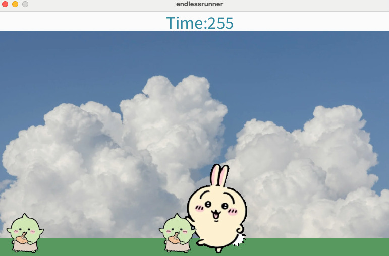

Typing Test Result
Coding Projects
Certifications

Typing Test Certificate
CLICK HERE for the TYPING TEST CERTIFICATION
Timeline
Want to learn more about skateboarding legend Yuto Horigome? Here's a brief timeline about his life, accomplishments, and more! By hovering over any of the years with your mouse from 1999-2024, you'll be able to see a short sentence describing any major acheivments done by Horigome. This project is meant as practice for creating timelines in Processing.
Shape Game
 This a game where the player is meant to use their arrow keys in order to get as much health as they can, but the health sign keeps moving and changing shape. If they cannot reach the health sign in time, it's game over! This project is meant as practice for importing images into Porcessing.
Etch-a-Sketch
A Etch-a-Sketch clone where you can use your arrow keys in order to draw a beautiful picture through thin lines! This project is meant as practice for importing pictures, and using arrow commands in Processing.
Endless Runner Final
In this endless runner, fight your way through by jumping over goblins! The time is counted through frame rate, the longer you live, the longer your time! This project is controlled through the a, d, and space keys.